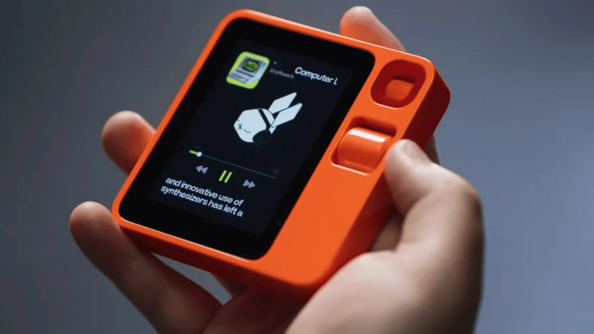

Inicio > Tecnologia
TECNOLOGIA | Alan Giovanni Rodriguez Davila | 02 oct. 2026 19:42

Hace escasos días, el CES 2026 presenció la llegada del Rabbit R1. Este pequeño aparato, del tamaño de un estuche de auriculares inalámbricos, pretende revolucionar el mercado de los móviles y ser su gran sustituto gracias a su potente sistema operativo y su avanzada inteligencia artificial.
Funciona con un sistema operativo llamado Rabbit OS, que ha sido desarrollado desde cero por la compañía."Estamos tratando de brindarle una herramienta tan intuitiva que ya sepa cómo usarla sin tener que aprender a usarla", añade Jesse Lyu, uno de sus creadores.
La clave del Rabbit R1 es la integración del llamado Large Action Model (LAM), un componente que permite que el dispositivo actúe sobre las indicaciones verbales del usuario. Por ejemplo, si el usuario le pide que reserve una mesa en un restaurante, el dispositivo se conectará a la aplicación del lugar y realizará la reserva automáticamente.
Pese a ser una idea algo loca y que fácilmente es comparable con el Pin de Humane, la verdad es que está triunfando y ha logrado vender 40.000 unidades en tan solo cuatro días desde su lanzamiento.